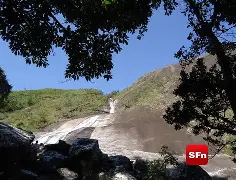
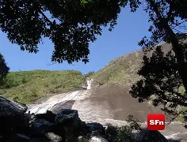
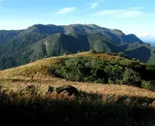
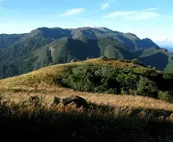

Sobre o lugar
O Pico do Desengano é um dos pontos mais imponentes e menos
explorados da Região Norte Fluminense, sendo
um
verdadeiro convite para quem busca contato intenso com a natureza,
aventura e paisagens de tirar o fôlego.
Localizado em meio ao Parque Estadual do Desengano, o pico representa
um dos pontos mais altos do estado do
Rio
de Janeiro e oferece uma experiência marcante para trilheiros mais
experientes.
A caminhada até o topo atravessa áreas preservadas de Mata Atlântica,
com trechos de floresta densa, campos
de
altitude e formações rochosas que revelam a diversidade ambiental da
região. Ao longo do percurso, é
possível
observar árvores centenárias, bromélias, orquídeas silvestres e, com
sorte, animais típicos do bioma, como
aves
de rapina, pequenos mamíferos e insetos raros.
A trilha é longa e exigente, com subidas íngremes e terrenos
irregulares, o que torna o desafio ainda mais
recompensador. O esforço é compensado ao alcançar áreas mais abertas,
onde a vegetação muda e o clima se
torna
mais fresco. Conforme a altitude aumenta, o silêncio e a sensação de
isolamento reforçam a conexão com o
ambiente natural.
No topo do Pico do Desengano, o visitante é presenteado com uma vista
panorâmica impressionante, que em dias
de
céu limpo permite observar diversas cidades da região e extensas áreas
verdes praticamente intocadas. O
vento
constante e a sensação de estar acima de tudo tornam o momento único,
ideal para contemplação, descanso e
fotografia.
Por ser uma área de preservação ambiental, o local exige respeito às
regras de conservação. A visita ao Pico
do
Desengano não é apenas uma trilha, mas uma experiência completa de
imersão na natureza, indicada para quem
busca
superação pessoal, silêncio, paisagens grandiosas e um contato
verdadeiro com o ambiente natural.
Informações rápidas
Galeria
 

 

💡 Dicas importantes
• Verifique o clima antes de ir: Neblina e chuva são comuns na região
e podem dificultar a navegação e
aumentar
o risco de escorregões, principalmente nos trechos mais
íngremes.
• Use calçado apropriado: Tênis comuns não são recomendados. Dê
preferência a botas ou tênis de trilha com
solado aderente, pois o terreno pode ficar escorregadio,
principalmente após chuvas.
• Tenha preparo físico adequado: O Pico do Desengano é a montanha mais
alta do Norte Fluminense e exige
resistência. A trilha tem trechos
longos de subida contínua, o que pode cansar bastante quem não está
acostumado.